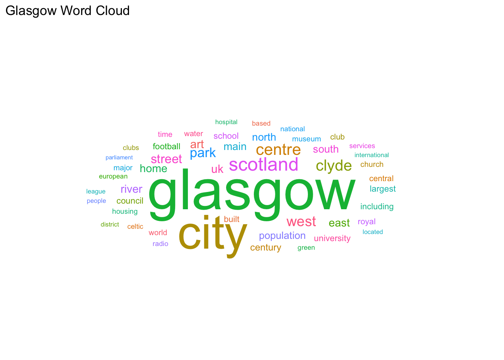

Qualitative Data Visualisation


Aims of this Session
This session will be split into two sections. Firstly, we’ll expand upon what you’ve learned about ggplot2 syntax and functions and introduce tidytext. For the second half, we’ll have a go at visualising themes. We hope that you’ll have fun and feel free to ask any questions.
Setting Up
Materials
The data - first data set we’ll be using for the first section
The data - second data set we’ll be using for the second section.
Please download both, right click on each of the above files and select ‘save as’.
Packages
library(tidytext) # for transforming data
library(tidyverse) # for data wrangling
library(Cairo) # for ggwordcloud package to run
library(ggwordcloud) # to render wordclouds
library(DiagrammeR) # to make qual coding
library(rgexf) #To create graph filesOpening File
Firstly, we need to open up the text file. We have opened .csv before, opening a text file is slightly different using the read.table function. Once the file is loaded… let’s have a peek at some of the data.
glasgowData <- read.table("Glasgow.txt", header = FALSE, fill = TRUE, encoding = "UTF-8")
print(head(glasgowData), 1)## V1 V2 V3 V4 V5 V6
## 1 Glasgow (/ˈɡlɑːzɡoʊ, ˈɡlæz-, ˈɡlɑːs-, ˈɡlæs-/;[4][5] Scots:
## 2 Glasgow grew from a small rural
## 3 With the onset of the Industrial
## 4 In the late 19th and early
## 5 Glasgow hosted the 2014 Commonwealth Games
## 6 Etymology
## V7 V8 V9 V10 V11 V12
## 1 Glesga [ˈɡlezɡə]; Scottish Gaelic: Glaschu [ˈkl̪ˠas̪əxu])
## 2 settlement on the River Clyde to
## 3 Revolution, the population and economy of
## 4 20th centuries, Glasgow's population grew rapidly,
## 5 and the first European Championships in
## 6
## V13 V14 V15 V16 V17 V18 V19 V20
## 1 is the most populous city in Scotland, and
## 2 become the largest seaport in Scotland, and tenth
## 3 Glasgow and the surrounding region expanded rapidly to
## 4 reaching a peak of 1,127,825 people in 1938.[10]
## 5 2018; and is also well known in the
## 6
## V21 V22 V23 V24 V25 V26 V27
## 1 the third most populous city in the
## 2 largest by tonnage in Britain. Expanding from
## 3 become one of the world's pre-eminent centres
## 4 Comprehensive urban renewal projects in the 1960s,
## 5 sporting world for football (particularly the Old
## 6
## V28 V29 V30 V31 V32 V33
## 1 United Kingdom, as of the 2017
## 2 the medieval bishopric and royal burgh,
## 3 of chemicals, textiles and engineering; most
## 4 resulting in large-scale relocation of people
## 5 Firm rivalry between Celtic and Rangers),
## 6
## V34 V35 V36 V37 V38 V39
## 1 estimated city population of 621,020. Historically
## 2 and the later establishment of the
## 3 notably in the shipbuilding and marine
## 4 to designated new towns; such as
## 5 rugby, athletics, tennis, golf and swimming.
## 6
## V40 V41 V42 V43 V44 V45 V46
## 1 part of Lanarkshire, the city now forms
## 2 University of Glasgow in the fifteenth century,
## 3 engineering industry, which produced many innovative and
## 4 Cumbernauld, Livingston, East Kilbride and peripheral suburbs,
## 5
## 6
## V47 V48 V49 V50 V51
## 1 the Glasgow City council area,
## 2 it became a major centre
## 3 famous vessels. Glasgow was the
## 4 followed by successive boundary changes,
## 5
## 6
## V52 V53 V54 V55 V56
## 1 one of the 32 council
## 2 of the Scottish Enlightenment in
## 3 Second City of the British Empire for much of the
## 4 reduced the population of the
## 5
## 6
## V57 V58 V59 V60 V61 V62 V63
## 1 areas of Scotland; the local authority is
## 2 the eighteenth century. From the eighteenth century
## 3 Victorian era and Edwardian period, although many
## 4 City of Glasgow council area to an
## 5
## 6
## V64 V65 V66 V67 V68 V69 V70 V71
## 1 Glasgow City Council. Glasgow is situated on the
## 2 onwards, the city also grew as one of
## 3 cities argue the title was theirs.[6][7][8][9]
## 4 estimated 615,070, with 1,209,143 people living in the
## 5
## 6
## V72 V73 V74 V75 V76 V77 V78
## 1 River Clyde in the country's West Central
## 2 Great Britain's main hubs of transatlantic trade
## 3
## 4 Greater Glasgow urban area.[11] The wider metropolitan
## 5
## 6
## V79 V80 V81 V82 V83 V84 V85 V86 V87
## 1 Lowlands. Inhabitants of the city are referred to as
## 2 with North America and the West Indies.
## 3
## 4 area is home to over 1,800,000 people, equating to
## 5
## 6
## V88 V89 V90 V91 V92 V93 V94 V95 V96
## 1 Glaswegians or Weegies . It is the fourth most
## 2
## 3
## 4 around 33% of Scotland's population. The city has one
## 5
## 6
## V97 V98 V99 V100 V101 V102 V103 V104
## 1 visited city in the UK[citation needed]. Glasgow is
## 2
## 3
## 4 of the highest densities of any locality in
## 5
## 6
## V105 V106 V107 V108 V109 V110 V111 V112 V113
## 1 also known for the Glasgow patter, a distinct dialect
## 2
## 3
## 4 Scotland at 4,023/km2.
## 5
## 6
## V114 V115 V116 V117 V118 V119 V120 V121 V122 V123 V124
## 1 of the Scots language that is noted for being difficult to
## 2
## 3
## 4
## 5
## 6
## V125 V126 V127 V128 V129 V130 V131
## 1 understand by those from outside the city.
## 2
## 3
## 4
## 5
## 6Preparing Data
I think we can agree this is very messy indeed! But let us think about questions raised during session one as a way to move forward.
- How can I organise this data?
- How can I make this data meaningful?
- How can I make this data tidy?
To make the data meangingful we could create a word cloud image, showing what words are most commonly used
To organise and tidy the data in a format for building a word cloud, we can use tidy text.
The tidy text format is defined by Julia Silge and David Robinson as data being in a table format with one-token-per-row. A token is a meaningful unit of text, such as a word. We are interested in words for our analysis so we would like to split this overall text file down into tokens. This process is called tokenization.
To make tidy text, we will use some data wrangling tricks that we have covered already, and introduce some new ones.
Firstly, we will use gather() as before to change our messy data to a tidy format.This creates two columns. We have named the first column key but you can call it anything you like as we are only selecting the word column to create the tidy_glasgow dataframe that we will be working with.
How many unique words do we have?
unique(tidy_glasgow$word) %>% length()
Breaking the code snippet above down, we can see it is performing two key things:
unique(tidy_glasgow$word) picks out each unique word.
However, we are not interested in what the words are - just the number
Pipe (%>%) and then the length() function to discover we have 5120 unique words in total. Note if you are using windows it might read as 5123 because of how some characters are rendered.
tidy_glasgow <- gather(glasgowData, key, word) %>%
select(word)
#checks how many unique words there are in total
unique(tidy_glasgow$word) %>%
length()## [1] 5120Tidying Data - Tidytext
Now that we have our words in long format we can tokenize, reduce our dataframe down down to only unique observations (in this case, words), and count the number of each observation.
unnest_tokens(word, word) transforms our data to be one word per row. Also strips punctuation. count(word, sort = TRUE) counts up the total amount of each word, sort = TRUE then places them in order. ungroup() count has grouped the data by word, we have now ungrouped so tokens is not grouped by word.
tokens <- tidy_glasgow %>%
unnest_tokens(word, word) %>%
count(word, sort = TRUE) %>%
ungroup()Exploring what words are most frequent.
Now we have cleaned the document up, let us see what words are the most frequent.
head() is a handy function built into R, which lets us peek at the top values. Let’s see what the top ten are.
top_10 <- tokens %>%
head(10)
knitr::kable(top_10, caption = "Top ten all words table")| word | n |
|---|---|
| the | 1421 |
| of | 681 |
| and | 567 |
| in | 510 |
| glasgow | 393 |
| to | 280 |
| a | 214 |
| city | 213 |
| is | 179 |
| as | 138 |
Removing Unwanted Words
Success, we have a word list. However, there are some common words that we might want to remove. Tidytext has a built in stop_words package that we can call on to remove frequent words such as “the” “and” etc.
We would like to be able to remove our own custom words. This is particularly useful for qualitative research where some words may be confidential. We can define what words we want to remove.
There is no numeric data within the top ten words, but we will remove numbers anyway to keep the focus simply on words.
We will need the following:
data("stop_words") to load the common stop words.
data.frame(word = c("glasgow's", "scottish")) to create a dataframe with custom stop words that we want removed. You can include anything you like.
str_detect to detect pre-defined strings (again, telling R to look in the word column). In this case we are filtering out numbers and returning a dataframe with all the rows containing all the unique numbers in the data set.
anti_join to return all rows that do not feature the data we want to remove. We will use it three times to remove common stopwords, numbers and also our unique words.
Then we can look at the top ten words again and see how it looks compared to before. Much better.
# removing stop words with built in tidytext package
data("stop_words")
tokens_clean <- tokens %>%
anti_join(stop_words)
# removing numbers
nums <- tokens_clean %>% filter(str_detect(word, "^[0-9]")) %>% select(word) %>% unique()
tokens_clean <- tokens_clean %>%
anti_join(nums, by = "word")
unique_stopwords <- data.frame(word = c("glasgow's","city's", "scottish"))
tokens_clean <- tokens_clean %>%
anti_join(unique_stopwords, by = "word")
top_10_clean <- tokens_clean %>%
head(10)
knitr::kable(top_10_clean, caption = "Top ten clean table")| word | n |
|---|---|
| glasgow | 393 |
| city | 213 |
| scotland | 81 |
| centre | 58 |
| clyde | 53 |
| west | 45 |
| park | 41 |
| street | 40 |
| population | 37 |
| home | 33 |
Data Visualisation
Creating a Wordcloud
We can now create a wordcloud using the ggwordcloud package.
Success, a word cloud with a title. We have chosen to show the top 50 words.
wordcloudplot <- head(tokens_clean, 50) %>%
ggplot(aes(label = word, color = word, size = n)) +
geom_text_wordcloud_area() +
scale_size_area(max_size = 20) +
theme_minimal() + ggtitle("Glasgow Word Cloud")
wordcloudplot
Task 1
Have a go at creating a word cloud with the top 200 words.
Show Solution…
head(tokens_clean, 200) %>%
ggplot(aes(label = word, color = word, size = n)) +
geom_text_wordcloud_area() +
scale_size_area(max_size = 20) +
theme_minimal() + ggtitle("Glasgow Word Cloud")Reminder
If you’re new to coding, something that you will pick up fast is the fact that we often use the internet to search for information that we need, or to help us out when we get stuck.
Remember that you are not expected to remember code and it is perfectly ok (assuming you have internet access) to google any of the functions we have covered at anytime.
Making Qual Code Diagrams
The library(DiagrammeR) package has been specifically created so that standardised syntax can be used to create diagrams in R.
Opening Text File
Here, we can open up a raw text file containing key themes from an interview with people about peanut butter.
First we will open the raw text file. scan opens up the file as a list which is useful here.
Subsetting
During our rigerous (and fake) thematic analysis, we constructed peanut butter as an overarching key theme. However, we also justified some other subthemes. In total we have five themes which we can view by subsetting the data as follows:
x[1] is Peanut Butter x[2] is Jelly Time (and so on)
Key DiagrammeR Syntax
DiagrammeR works by plotting diagrams as journeys (edges) going from and to (nodes). As you can see in the code below because Peanut Butter x[1] is the overarching theme, all journeys start with it.
nodesn=c(x[1],x[2],x[3],x[4]) defines our node names direct from text
create_node_df creates our themes as ‘nodes’ (destinations)
create_edge_df defines theme relationships as ‘edges’ (journeys)
create_graph creates a graph which we can render.
layout = "tree" is important because it creates the hierarchal nature, if you are curious - try removing it and see what happens.
There is a transparent audit trail for this diagram, we chose not to plot x[5] “Hate it” because a minority of participants conversations clustered around this. Visualiasing qualitative data in this way helps us to be more transparent about decisions that we make at different steps along the research journey.
x <- scan("peanut.txt", what="", sep="\n", quiet = TRUE)
from=c(x[1], x[1], x[1])
to=c(x[2],x[3],x[4])
nodesn=c(x[1],x[2],x[3],x[4])
nodes <- create_node_df(n=length(nodesn), label=nodesn, width=0.9, shape = "rectangle", color = "#983E82", fillcolor = "white")
edges <- create_edge_df(from = factor(from, levels=nodesn), to = factor(to, levels=nodesn), arrowhead = "arrow", color = "black")
graph <- create_graph(nodes_df = nodes, edges_df = edges, directed = FALSE)
graph %>%
render_graph(title = "Themes From Interviews", layout = "tree")Task 2
Add in “Hate it” to the coding diagram. Hint remember if there are four “journeys” then there need to be four defined places to start from.
Show Solution…
from=c(x[1], x[1], x[1], x[1])
to=c(x[2],x[3],x[4], x[5])
nodesn=c(x[1],x[2],x[3],x[4], x[5])
nodes <- create_node_df(n=length(nodesn), label=nodesn, width=0.9, shape = "rectangle", color = "#983E82", fillcolor = "white")
edges <- create_edge_df(from = factor(from, levels=nodesn), to = factor(to, levels=nodesn), arrowhead = "arrow", color = "black")
graph <- create_graph(nodes_df = nodes, edges_df = edges, directed = FALSE)
graph %>%
render_graph(title = "Themes From Interviews", layout = "tree")